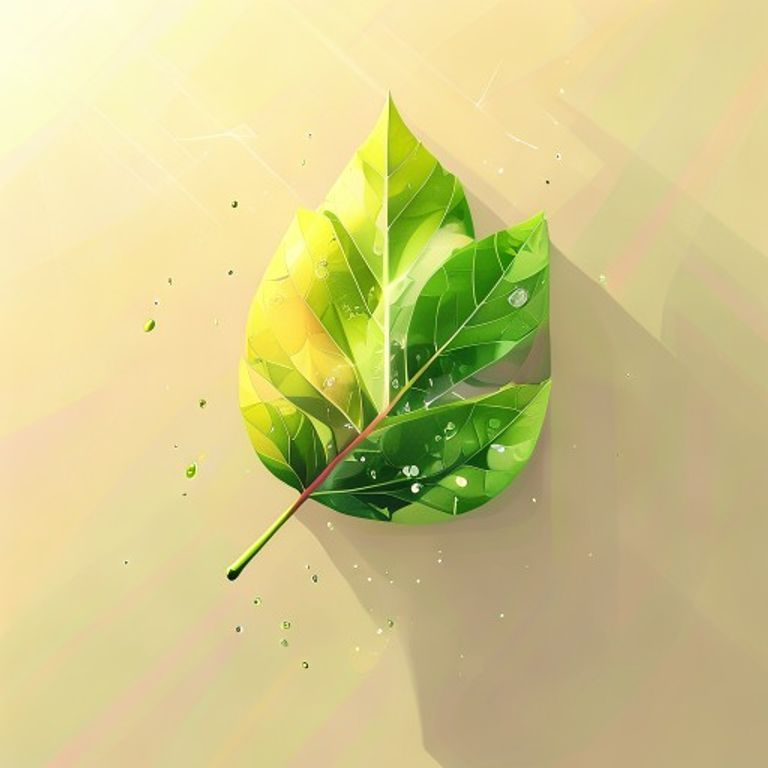

A/B — brief simple vs brief enriquit amb Gemma 3
Concepte: "les fulles capten la llum gracies a la clorofil·la". Estil FLUX idèntic (isomètric), seed 42.
Text original (referencia)
La fotosintesi es el proces mitjancant el qual les plantes, les algues i
alguns bacteris transformen l'energia luminosa en energia quimica. Aquest
proces ocorre principalment als cloroplasts de les cel·lules vegetals, on es
troba la clorofil·la, un pigment verd que absorbeix la llum solar.
A la primera etapa (fase luminosa), la clorofil·la capta fotons de la llum
solar. L'energia captada trenca molecules d'aigua (H2O) en hidrogen i oxigen,
alliberant O2 com a subproducte. A la segona etapa (cicle de Calvin),
l'energia acumulada s'utilitza per fixar el CO2 atmosferic i convertir-lo en
glucosa (C6H12O6), que servira d'aliment a la planta.
Text adaptat (B1-ESO)
Les plantes fabriquen el seu propi aliment. Aquest proces s'anomena
fotosintesi. Per fer-la, necessiten tres coses: llum del sol, aigua i dioxid
de carboni. Les fulles capten la llum gracies a la clorofil·la, un pigment
verd.
Rubrica pedagogica aplicada per Gemma 3
Elements obligatoris:
- fulla
- raigs de sol
- energia (llum)
- aigua (gotes)
- aire (CO2)
Relacio entre elements: La fulla central rep els raigs de sol, que la il·luminen. Gota d'aigua a la base de la fulla. L'aire envolta la fulla, amb petites partícules que representen el CO2. La llum emana de la fulla, simbolitzant l'energia captada.
Emfasi pedagogic: La fulla ha de ser el focus principal, brillant i vibrant. Els raigs de sol han de ser clars i direccionals. La llum que emana de la fulla ha de ser visible i atractiva.
Misconception a evitar: Mostrar la fulla com un objecte passiu. Representar-la com un element actiu que absorbeix i transforma l'energia.
A. Brief actual (simulat pel LLM adaptador)
A single green leaf seen up close on a tree branch, bright sunlight rays shining on the leaf surface, three-quarter view, warm morning light, faint outlines of chloroplasts visible as tiny green dots inside the leaf, no people

B. Brief enriquit (Gemma 3 + rubrica)
Show a vibrant green leaf bathed in warm sunlight. Rays of light are directed towards the leaf, and glowing energy emanates from it. Include small water droplets at the base of the leaf and subtle particles in the air representing carbon dioxide. The leaf appears active and full of energy. Focus on the leaf as the central element.
